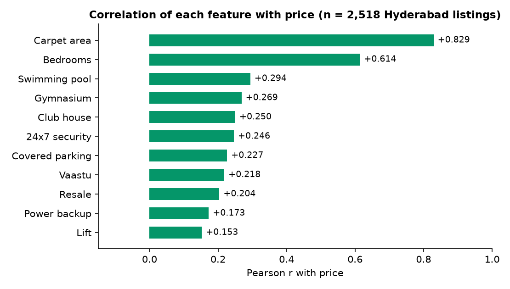
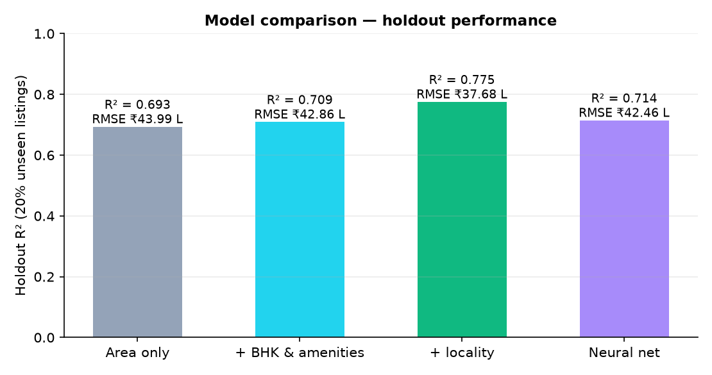
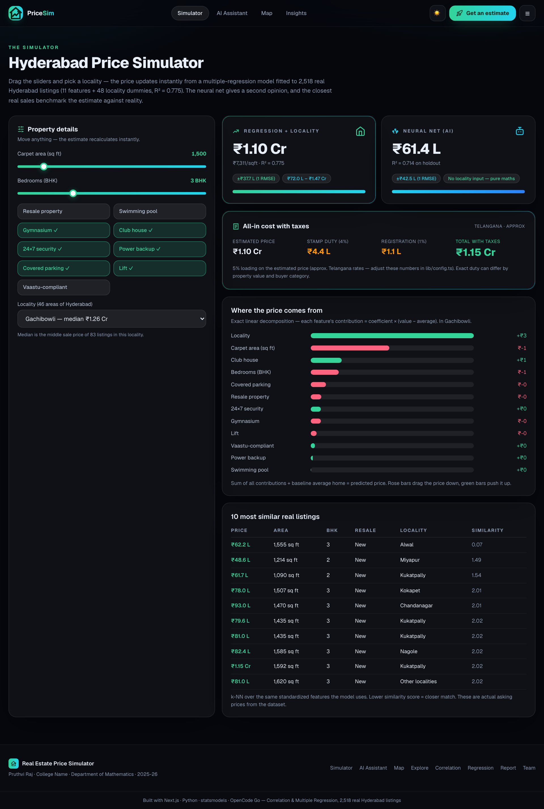

Buying a home is the single largest financial decision most people make. In Hyderabad, the price of a flat can differ by more than 2.5× with the same area and number of rooms, purely because of the locality — a 1,500 sq ft 3-BHK costs about ₹64 L in Nizampet but ₹1.63 Cr in Banjara Hills. This project asks a simple mathematical question: how do area, rooms, amenities and location drive the price of a home, and can we quantify that relationship?
The project answers it with the statistical toolkit of a first course in regression: Pearson correlation to measure individual relationships, and multiple linear regression to model all factors together. The fitted models are deployed as an interactive web application so the mathematics can be experienced live: drag a slider, pick a locality, and see the predicted price update instantly — with the maths shown on every page.
Correlation quantifies the strength and direction of a linear relationship between two variables. The Pearson product-moment coefficient r is defined as the covariance of the two variables divided by the product of their standard deviations:
Here x̄ and ȳ are the sample means. The value of r always lies in [−1, +1]: +1 is a perfect positive linear relationship, −1 a perfect inverse one, and 0 means no linear relationship (a curved relationship may still exist). Common rules of thumb: |r| ≥ 0.7 strong, ≥ 0.4 moderate, ≥ 0.2 weak, below that very weak.
Correlation is symmetric, unit-free, and sensitive to outliers and to the range of data sampled. Critically, it measures association in isolation — it cannot tell us how a variable behaves once other variables are held constant. That is the job of regression.

| Feature | Pearson r with price | Strength | Interpretation |
|---|---|---|---|
| Carpet area (sq ft) | +0.829 | Strong | Bigger homes cost more — the dominant single factor |
| Bedrooms (BHK) | +0.614 | Moderate | More rooms → higher price, but area matters more |
| Swimming pool | +0.294 | Weak | Amenities matter, but they mostly travel with area and locality |
| Gymnasium | +0.269 | Weak | |
| Club house | +0.250 | Weak | |
| 24×7 security | +0.246 | Weak | |
| Covered parking | +0.227 | Weak | |
| Vaastu-compliant | +0.218 | Weak | |
| Resale | +0.204 | Weak | |
| Power backup · Lift | +0.173 · +0.153 | Very weak |

Three limitations motivate regression:
Linear regression models the expected price as a linear function of a predictor:
β₀ is the intercept (expected price when area = 0), β₁ is the slope (expected price increase per additional sq ft), and ε is the error. The coefficients are chosen by Ordinary Least Squares (OLS) — minimising the sum of squared residuals:
R² (coefficient of determination) is the share of variance in price explained by the model: R² = 1 − SS_res/SS_tot, where SS_res is the residual sum of squares and SS_tot the total sum of squares. RMSE (root mean squared error) reports the typical error in the original units (rupees) and is computed on data the model has never seen (the holdout set).
Area alone explains 69.3% of price variance (R² = 0.693, RMSE ₹43.99 L) — a strong start, but the remaining 30% is where rooms, amenities and above all location live.
Correlation said more bedrooms → higher price (r = +0.61). But once area is held constant, the regression coefficient of bedrooms is negative (−₹16.0 L per extra bedroom in the 11-feature model): a 4-BHK with the same carpet area as a 3-BHK is priced lower per square foot. This is the classic lesson of multiple regression — coefficients measure an effect controlling for the other variables, and can legitimately differ from (even reverse) the raw correlation.
We extend the model to all numeric features and encode the locality as dummy (indicator) variables. For 48 named localities (plus a residual “Other” group) we create 48 dummies, each 1 if the home sits in that area and 0 otherwise (one reference locality is dropped to avoid perfect multicollinearity):
Each γₗ is the locality’s price premium (or discount) relative to the reference area, after controlling for every feature. The fitted values are honest and interpretable:
| Locality | Premium vs reference (₹) | Locality | Discount (₹) |
|---|---|---|---|
| Banjara Hills | +89.9 L | Tellapur | −21.8 L |
| Jubilee Hills | +84.1 L | Bandlaguda Jagir | −20.1 L |
| Madhapur | +41.7 L | Kollur Road | −18.7 L |
| Hitech City | +41.5 L | Patancheru | −21.0 L |

| Model | Variables | Holdout R² | Holdout RMSE |
|---|---|---|---|
| Area only | 1 | 0.693 | ₹43.99 L |
| Multiple linear | 11 | 0.709 | ₹42.86 L |
| Multiple + locality | 11 + 48 dummies | 0.775 | ₹37.68 L |
| Neural net (MLP) | 11 | 0.714 | ₹42.46 L |
Residual diagnostics (residuals vs fitted, Q–Q plot) confirm the expected shape for housing data: a fan-shaped variance that grows with price (heteroscedasticity) and a slightly fat right tail from premium listings — mild deviations from homoscedasticity, acceptable at n = 2,518 and reported honestly rather than “cleaned away”.

The neural network (a multilayer perceptron, 32→16 hidden neurons, ReLU) beats plain linear regression on the same 11 features (R² 0.714 vs 0.709, RMSE lower by ~1%), but cannot match the interpretable linear model with locality (0.775). That comparison — classical statistics vs machine learning, and the transparency of regression — is itself a finding of the project.
Everything above is packaged as a production-quality web application built with Next.js, TypeScript and Tailwind CSS, deployed on Vercel:

| Property | Value |
|---|---|
| Source | 2,518 real Hyderabad residential listings (public listing-site data) |
| Target | Asking price, ₹20 L – ₹16.5 Cr (median ₹77.5 L, mean ₹98.2 L) |
| Features | Carpet area, bedrooms (BHK), new/resale, 9 amenity flags, locality |
| Localities | 48 named areas + “Other” (Banjara Hills median ₹2.99 Cr … Nizampet ₹47.3 L) |
| Honesty note | Asking prices, not closed transactions — flagged inside the app whenever medians are shown |
Class 206 · Department of Mathematics · Guided by LG No. 11 · Bhairavesh (4160), Irfan (4161), Rahul (4169), Krishna (4165), Pruthvi Raj (4157).
This project demonstrates the complete arc of a statistical study: measure (correlation), model (multiple regression), validate (holdout), interpret (coefficients and locality premia), and communicate (a live, interactive web application). The mathematics is classical and examinable — every coefficient, R² and RMSE in the app comes from the fitted models — while the delivery shows the topic in a form people can actually use: a prospective buyer can price a home in any part of Hyderabad in seconds, in rupees, and see exactly why the model says what it says.